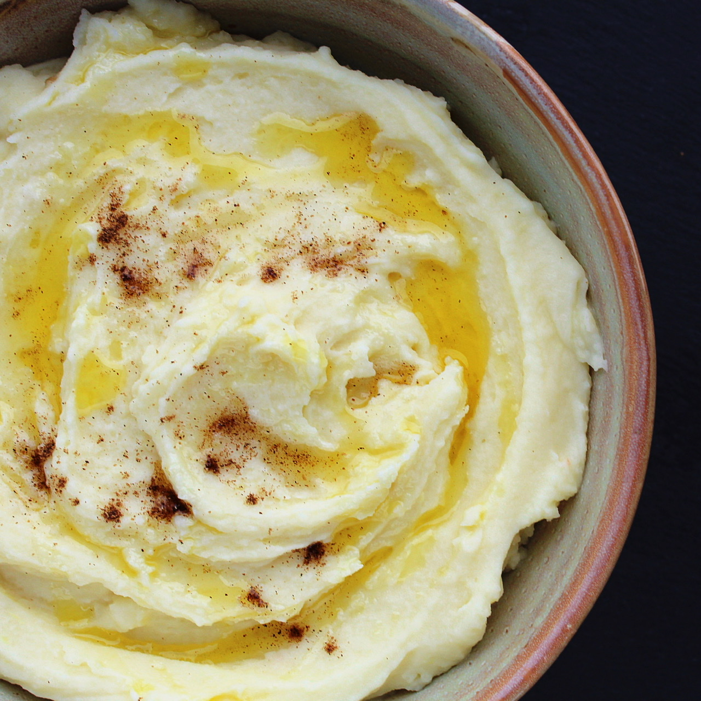

Potato

Mashed Potato recipe
A dish made up of potatoes ,cream,milk and butter
Ingredients
- 1 pound potatoes
- 2 cubes chicken bullion
- 1 cup water
- 1/2 cup sour cream
- 1/2 cup unsalted butter/li>
- 2 tablespoons milk
Steps
- Cut potatoes and add to pressure cooker with water and cubes,set timer for high
- Mix potatoes and water,allow for 15mins for pressure to build
- Release pressure and drain the liquid
- Add sour cream,butter and milk,gently mash potatoes with potato masher